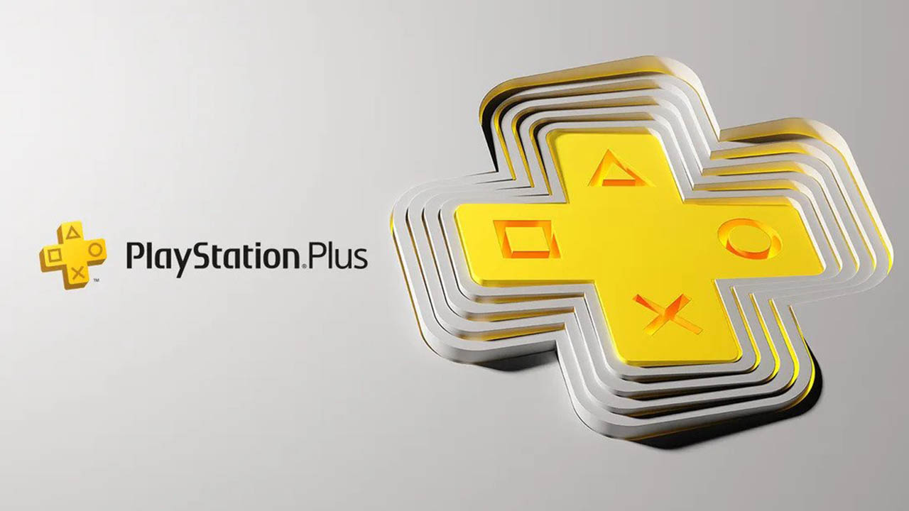

Consolas

PlayStation 1 (1994)

La primera consola creada por Sony.
Revolucionó la industria gaming con gráficos en 3D y discos CD.
Sus videojuegos más famosos fueron Crash Bandicoot, Resident Evil y Metal Gear Solid.
PlayStation 2 (2000)
La consola más vendida de la historia.
Incluyó lector DVD y una enorme variedad de videojuegos.
Destacaron títulos como GTA San Andreas, God of War y Shadow of the Colossus.
PlayStation 3 (2006)

Introdujo gráficos HD y el formato Blu-ray.
También permitió juego online mediante PlayStation Network.
Destacaron videojuegos como Uncharted y The Last of Us.
PlayStation 4 (2013)

Una de las consolas más exitosas de Sony.
Mejoró el rendimiento gráfico y la experiencia social.
Fue famosa por exclusivos como Spider-Man, Horizon Zero Dawn y God of War.
PlayStation 5 (2020)
La nueva generación de PlayStation.
Incluye SSD ultrarrápido, gráficos 4K y control DualSense con vibración avanzada.
Diseñada para experiencias más inmersivas y juego en alta velocidad.
Videojuegos Emblemáticos

GOD OF WAR
THE LAST OF US
SPIDER-MAN
Los videojuegos emblemáticos de PlayStation son títulos que marcaron generaciones
gracias a su calidad, historia e innovación.
Muchos se convirtieron en exclusivos legendarios de Sony.
Entre los más importantes se encuentran:
• God of War → famoso por su acción y mitología.
• The Last of Us → reconocido por su historia emocional.
• Spider-Man → destacado por su mundo abierto y jugabilidad.
Estos videojuegos fortalecieron la identidad de PlayStation
y la industria gaming moderna.
PlayStation Plus

PlayStation Plus es el servicio de suscripción de Sony.
Permite jugar online y acceder a beneficios exclusivos.
Incluye juegos mensuales gratuitos y descuentos especiales.
También ofrece un catálogo de videojuegos mediante PlayStation Plus Extra y Deluxe.
Existen diferentes planes:
• Essential
• Extra
• Deluxe
Actualmente es uno de los servicios más importantes
para jugadores de PlayStation.
Cloud Gaming

PlayStation también cuenta con tecnología de juego en la nube.
Permite jugar algunos títulos mediante streaming sin descargarlos.
Los juegos se ejecutan en servidores remotos
y se transmiten mediante internet.
Compatible con:
• PlayStation 5
• PlayStation 4
• PC
Gracias a esta tecnología,
los jugadores pueden acceder a sus videojuegos desde distintos dispositivos.
Multiplataforma
Muchos videojuegos de PlayStation también son multiplataforma.
Esto significa que pueden jugarse en diferentes dispositivos como:
• PlayStation
• Xbox
• PC
• Nintendo Switch
• Celulares
Gracias al crossplay,
jugadores de distintas plataformas pueden jugar juntos.
Algunos ejemplos populares son:
• Fortnite
• Minecraft
• Call of Duty
• Roblox
Esto ayuda a crear comunidades más grandes
y mejorar la experiencia online.
Historia
PlayStation es una marca de videojuegos creada por Sony.
Fue lanzada oficialmente en 1994 en Japón.
La primera consola PlayStation compitió contra:
• Nintendo 64
• Sega Saturn
Su éxito creció rápidamente gracias a sus gráficos 3D
y grandes franquicias exclusivas.
Después llegaron:
• PlayStation 2 (2000)
• PlayStation 3 (2006)
• PlayStation 4 (2013)
• PlayStation 5 (2020)
Actualmente PlayStation es una de las compañías más importantes
de la industria gaming y continúa innovando
con nuevas tecnologías y videojuegos exclusivos.